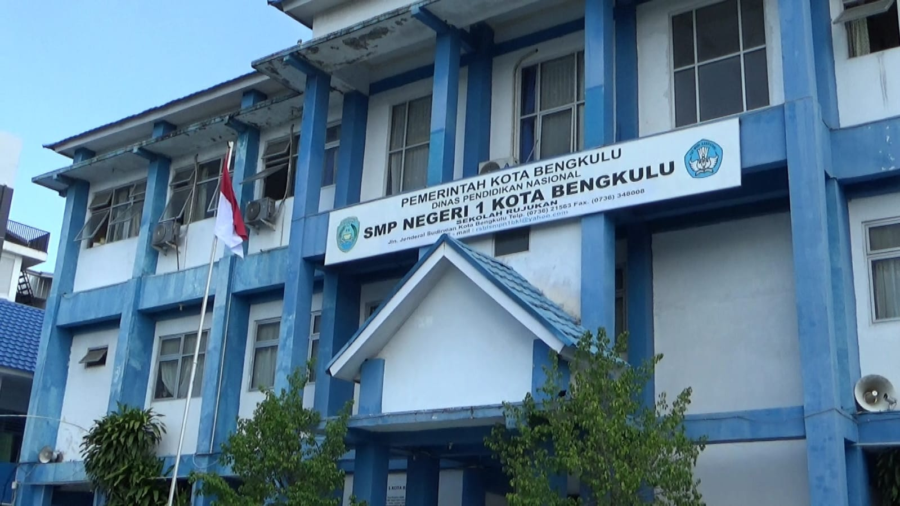

SMP 1 Kota Bengkulu adalah salah satu sekolah terbaik di kota Bengkulu, yang telah mencetak generasi unggul selama bertahun-tahun. Kami berkomitmen untuk memberikan pendidikan berkualitas dan pengalaman belajar terbaik.
Selamat Datang di SMP 1 Kota Bengkulu
Sekolah dengan fasilitas modern, kurikulum terkini, dan tenaga pengajar berpengalaman siap membantu Anda mencapai prestasi terbaik.
Daftar Sekarang

Keunggulan Kami
Fasilitas Lengkap
Kami menyediakan fasilitas modern dan lengkap untuk mendukung proses belajar-mengajar.
Tenaga Pengajar Berpengalaman
Didukung oleh tenaga pengajar yang berpengalaman dan berdedikasi tinggi.
Kurikulum Terupdate
Kami menerapkan kurikulum terkini untuk mempersiapkan siswa-siswi menghadapi tantangan masa depan.
Prestasi Membanggakan
Siswa-siswi kami berprestasi di berbagai bidang akademik maupun non-akademik.
Profil
Akademik
Kami menerapkan kurikulum modern yang dirancang untuk memenuhi kebutuhan siswa dalam era digital. Dengan tenaga pengajar berpengalaman, kami mempersiapkan siswa untuk sukses dalam pendidikan yang lebih tinggi.
Ekstrakurikuler
Kami menawarkan berbagai kegiatan ekstrakurikuler seperti seni, olahraga, musik, dan klub debat. Kegiatan ini dirancang untuk mengembangkan bakat dan kemampuan siswa di luar kelas.
Kontak
Jika Anda memiliki pertanyaan, jangan ragu untuk menghubungi kami melalui email: info@smp1bengkulu.sch.id atau telepon di nomor (0736) 123456.